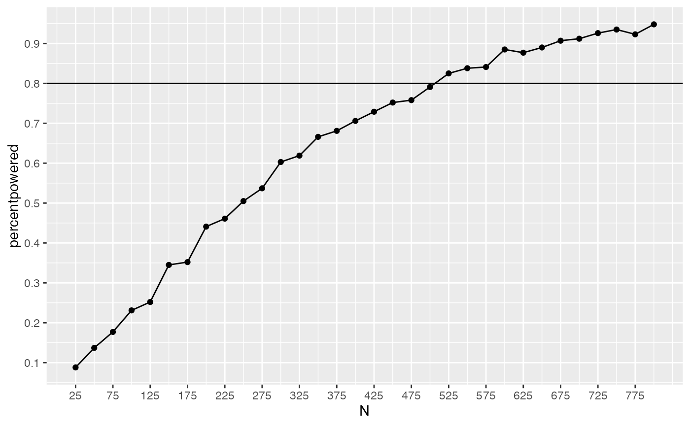

Lab8.Rmd1. Consider a 2x2 design. Assume the DV is measured from a normal distribution with mean 0, and standard deviation 1. Assume that the main effect of A causes a total shift of .5 standard deviations of the mean between the levels. Assume that level 1 of B is a control, where you expect to measure the standard effect of A. Assume that level 2 of B is an experimental factor intended to reduce the effect of A by .25 standard deviations.
## ── Attaching packages ─────────────────────────────────────── tidyverse 1.3.1 ──## ✓ ggplot2 3.3.5 ✓ purrr 0.3.4
## ✓ tibble 3.1.6 ✓ dplyr 1.0.7
## ✓ tidyr 1.2.0 ✓ stringr 1.4.0
## ✓ readr 2.0.2 ✓ forcats 0.5.1## ── Conflicts ────────────────────────────────────────── tidyverse_conflicts() ──
## x dplyr::filter() masks stats::filter()
## x dplyr::lag() masks stats::lag()
df1 <- data.frame(A = c("A1", "A1", "A2", "A2"),
B = c("B1", "B2", "B1", "B2"),
dv = c(0,0,0.5,0.25))A. create a ggplot2 figure that depicts the expected results from this design (2 points)
Conduct simulation-based power analyses to answer the questions.
B. How many subjects are needed to detect the main effect of A with power = .8? (2 points)
# Guessing and Checking N per group
N <- 60
#Actual Simulation Based Power Analysis
A_pvalue <- c()
B_pvalue <- c()
AB_pvalue <- c()
for(i in 1:1000){
IVA <- rep(rep(c("1","2"), each=2),N)
IVB <- rep(rep(c("1","2"), 2),N)
DV <- c(replicate(N,c(rnorm(1,0,1), # means A1B1
rnorm(1,0,1), # means A1B2
rnorm(1,.5,1), # means A2B1
rnorm(1,.25,1) # means A2B2
)))
sim_df <- data.frame(IVA,IVB,DV)
aov_results <- summary(aov(DV~IVA*IVB, sim_df))
A_pvalue[i]<-aov_results[[1]]$`Pr(>F)`[1]
B_pvalue[i]<-aov_results[[1]]$`Pr(>F)`[2]
AB_pvalue[i]<-aov_results[[1]]$`Pr(>F)`[3]
}
length(A_pvalue[A_pvalue<0.05])/1000## [1] 0.814In a simulation with 60 participants per group (240 total participants) we see >80% power.
C. How many subjects are needed to detect the interaction effect with power = .8? (2 points)
# N per group
N <- 505
A_pvalue <- c()
B_pvalue <- c()
AB_pvalue <- c()
for(i in 1:1000){
IVA <- rep(rep(c("1","2"), each=2),N)
IVB <- rep(rep(c("1","2"), 2),N)
DV <- c(replicate(N,c(rnorm(1,0,1), # means A1B1
rnorm(1,0,1), # means A1B2
rnorm(1,.5,1), # means A2B1
rnorm(1,.25,1) # means A2B2
)))
sim_df <- data.frame(IVA,IVB,DV)
aov_results <- summary(aov(DV~IVA*IVB, sim_df))
A_pvalue[i]<-aov_results[[1]]$`Pr(>F)`[1]
B_pvalue[i]<-aov_results[[1]]$`Pr(>F)`[2]
AB_pvalue[i]<-aov_results[[1]]$`Pr(>F)`[3]
}
length(AB_pvalue[AB_pvalue<0.05])/1000## [1] 0.797With 505 subjects per group (2020 subjects total) we are approximately 80% powered to detect an effect of the interaction.
Bonus point question: B1. Create a power curve showing how power for the interaction effect in this example is influenced by number of subjects. Choose a range of N from 25 to 800 (per cell) and run a simulation-based power analysis for increments of 25 subjects. Then plot the results using ggplot2 (2 points)
# N per group
N <- (seq(25,800,by=25))
percentpowered<-c()
for(x in 1:length(N)){
N2 <- N[x]
AB_pvalue <- c()
for(i in 1:1000){
sim_df <- tibble(
IVA = rep(rep(c("1","2"), each=2),N2),
IVB = rep(rep(c("1","2"), 2),N2),
DV = rnorm(4*N2,c(0,0,.5,.25),1)
)
aov_results <- summary(aov(DV~IVA*IVB, sim_df))
AB_pvalue[i]<-aov_results[[1]]$`Pr(>F)`[3]
}
percentpowered[x]<-length(AB_pvalue[AB_pvalue<0.05])/1000
}
plotdata<-tibble(N,percentpowered)
ggplot(plotdata, aes(x=N,y=percentpowered))+
geom_point()+
geom_line()+
scale_x_continuous(breaks=seq(25,800,50))+
scale_y_continuous(breaks=seq(0,1,.1))+
geom_hline(yintercept=.8) Indicates that we reach sufficient power for interaction effects just after 500 subjects per cell (as described previously in answer C). For loop in a for loop is fun! Originally went down a rabbit hole of trying to use sapply in/around the for loop before seeing it handled this way in lab solution.